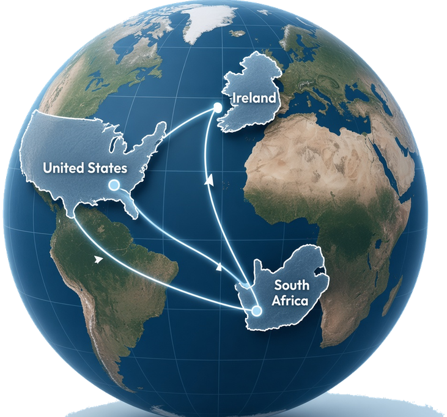

Established 1999 · Pretoria, South Africa
Want to work in the US or Ireland?
South Africa’s oldest H-2A consultancy · 5 000+ placements · 98% annual return. Every candidate is interviewed in person. Visa applications must be in before 20 December.

- South Africa
- United States
- Ireland
- 5 000+Workers placed
- 98%Annual return rate
- 27 yrsExperience
Services
We specialise in recruiting, preparing, and processing South African H-2A workers for U.S. agricultural employers through a fully managed, integrity-driven recruitment and consular process.
-
Recruitment & matching
We work closely with employers to understand job specifications, policies, and physical requirements, then search our internal database or advertise vacancies when needed. Every candidate undergoes a personal interview before being introduced to employers.
-
Visa preparation & DS-160
Once employers confirm their selections, we handle visa application forms, quality control, DS-160 completion, visa fee payment, and appointment scheduling — so workers only need to submit their completed forms.
-
Consulate processing support
From worker list submission through consulate appointments, we coordinate the process and keep employers and workers informed by email and direct messaging.
Who we help
Whether you are an employer, a worker, or an agent partner, we deliver the same honest, hands-on service we have built our reputation on since 1999.
-
U.S. & Irish agricultural employers
We match you with screened, suitable candidates and manage the recruitment and visa process end to end. We ideally need one to two months' head start for smooth preparation, and all visa applications must be submitted before 20 December each season.
-
South African agricultural workers
If you meet employer requirements, we guide you through personal screening, interviews, and visa preparation. Open positions are posted on Facebook first — see Follow us on Facebook.
-
Agent partners
We hold an exclusive contract with one of the largest H-2A agents in the United States and provide the same reliable, exceptional support to all our valued agent partners across 27 years of trusted relationships.
How it works
Our recruitment process is designed to efficiently match employers with suitable candidates. We ideally need one to two months' head start.
Recruitment
-
Employer requirements
We confirm job specifications, smoking or alcohol policies, physical requirements, skills, experience, and any additional criteria.
-
Candidate search
We search our internal database first. If no suitable candidates are available, we advertise on Facebook and TikTok.
-
Personal screening
All applicants undergo a personal interview to ensure they meet the employer's requirements as closely as possible.
-
Resume submission & interviews
Selected resumes are forwarded to the employer for review, shortlisting, and interviews by phone or video call.
-
Employment offer & visa process
Once the employer confirms selections, the offer email triggers visa preparation. Employers may also receive all resumes and make their own selections.
Consulate processing
After the worker list is confirmed, we contact each worker and issue the right form. Once the ETA-790 and I-797B are in, we complete DS-160s, pay visa fees with the worker, and book the earliest consulate appointment. Applications must be in before 20 December.
About us
Magda van der Westhuizen founded Euro Personnel Consultants in 1999 and built a reputation for integrity, diligence, and loyalty among employers and workers alike. In 2025 she passed the reins to her daughter, Charlotte Portwig, an ex-soldier, so that loyalty, honesty, and excellence continue to guide the work. We do things the old-school way — no shortcuts, no sugar-coating. We tell it like it is, and our results speak for themselves.
Follow us on Facebook
Open positions are posted on our Facebook page first. That is where we advertise.
Facebook — Euro Personnel ConsultantsWe also post occasionally on TikTok @europersonnel.
Contact
Ready to discuss recruitment or visa processing? Reach out to Charlotte Portwig and the Euro Personnel team.
Office
815 Boabab Street
Doornpoort
Pretoria 0017
Reg. no. 2001/019249/23